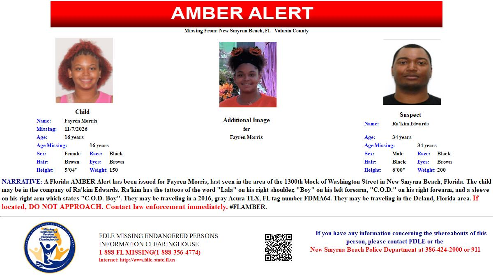

Florida's AMBER, Silver & Purple alerts, filed by Beacon in Kiki's AMBER Alerts Space — official alerts only, exactly as issued. If you ever spot a listed vehicle or person: do not approach, call 911.

Florida AMBER Alert, FDLE. Missing from New Smyrna Beach, FL (Volusia County) since 11/7/2026. Last seen near the 1300 block of Washington Street, New Smyrna Beach. Female, 5'04", 150 lbs, brown hair, brown eyes.
May be with Ra'kim Edwards, 34, male, 6'00", 200 lbs, black hair, brown eyes; tattoos: "Lala" right shoulder, "Boy" left forearm, "C.O.D." right forearm, right-arm sleeve "C.O.D. Boy".
Vehicle: 2016 gray Acura TLX, FL tag FDMA64. May be traveling toward Deland, FL.
IF LOCATED, DO NOT APPROACH. Contact law enforcement immediately: FDLE 1-888-FL MISSING (1-888-356-4774), New Smyrna Beach Police 386-424-2000, or 911.
Source: the official FDLE poster, shared by Kiki on Nov 12, 2026. Always check FDLE for the latest status.
FDLE Missing Endangered Persons Clearinghouse: 1-888-FL MISSING (1-888-356-4774). Emergencies: 911.
AMBER alerts are for missing children. Silver alerts are for missing elderly folks with memory trouble. Purple alerts are for missing adults with certain disabilities. Beacon files all three in the Space; resolved alerts stay listed with a Resolved mark.